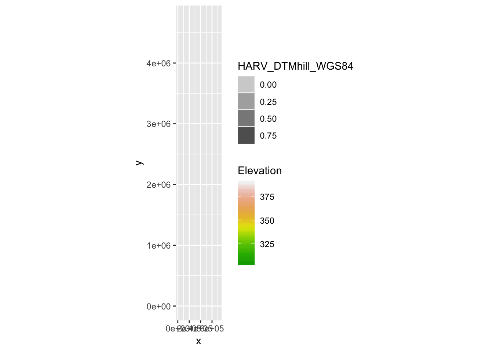

LIFE: How do I work with raster data sets that are in different projections?
Give examples…
In the Plot Raster Data in R episode, we learned how to layer a raster file on top of a hillshade for a nice looking basemap. In that episode, all of our data were in the same CRS. What happens when things don’t line up?
Task: Import two geoTiffs, investigate ggplot behaviour when plotting them on top of each other. Explain behaviour by comparing projections of the two geoTiffs.
For this episode, we will be working with the Harvard Forest Digital Terrain Model data. This differs from the surface model data we’ve been working with so far in that the digital terrain model (DTM) includes the tops of trees, while the digital surface model (DSM) shows the ground level.
Import dtmCrop and dtmHill_WGS84 geoTiffs
DTM_HARV <- raster("data/NEON-DS-Airborne-Remote-Sensing/HARV/DTM/HARV_dtmCrop.tif")
DTM_hill_HARV <- raster("data/NEON-DS-Airborne-Remote-Sensing/HARV/DTM/HARV_DTMhill_WGS84.tif")
DTM_HARV## class : RasterLayer
## dimensions : 1367, 1697, 2319799 (nrow, ncol, ncell)
## resolution : 1, 1 (x, y)
## extent : 731453, 733150, 4712471, 4713838 (xmin, xmax, ymin, ymax)
## crs : +proj=utm +zone=18 +datum=WGS84 +units=m +no_defs +ellps=WGS84 +towgs84=0,0,0
## source : /Users/darya/Dropbox (Sydney Uni)/Training/19_09_11_ResBaz/19_01_11_ResBazGIS/data/NEON-DS-Airborne-Remote-Sensing/HARV/DTM/HARV_dtmCrop.tif
## names : HARV_dtmCrop
## values : 304.56, 389.82 (min, max)DTM_hill_HARV## class : RasterLayer
## dimensions : 1438, 1747, 2512186 (nrow, ncol, ncell)
## resolution : 1.22e-05, 8.99e-06 (x, y)
## extent : -72.18192, -72.16061, 42.52941, 42.54234 (xmin, xmax, ymin, ymax)
## crs : +proj=longlat +datum=WGS84 +no_defs +ellps=WGS84 +towgs84=0,0,0
## source : /Users/darya/Dropbox (Sydney Uni)/Training/19_09_11_ResBaz/19_01_11_ResBazGIS/data/NEON-DS-Airborne-Remote-Sensing/HARV/DTM/HARV_DTMhill_WGS84.tif
## names : HARV_DTMhill_WGS84
## values : -0.1239408, 0.9957315 (min, max)Convert rasters into data frames to plot with ggplot
DTM_HARV_df <- as.data.frame(DTM_HARV, xy = TRUE)
DTM_hill_HARV_df <- as.data.frame(DTM_hill_HARV, xy = T)
str(DTM_HARV_df)## 'data.frame': 2319799 obs. of 3 variables:
## $ x : num 731454 731454 731456 731456 731458 ...
## $ y : num 4713838 4713838 4713838 4713838 4713838 ...
## $ HARV_dtmCrop: num 389 390 389 389 389 ...str(DTM_hill_HARV_df)## 'data.frame': 2512186 obs. of 3 variables:
## $ x : num -72.2 -72.2 -72.2 -72.2 -72.2 ...
## $ y : num 42.5 42.5 42.5 42.5 42.5 ...
## $ HARV_DTMhill_WGS84: num NA NA NA NA NA NA NA NA NA NA ...Plot DTM first
DTM_HARV_df %>%
ggplot() +
geom_raster(aes(x = x, y = y, fill = HARV_dtmCrop)) +
scale_fill_gradientn(name = "Elevation", colours = terrain.colors(10)) +
coord_quickmap()Now plot hillshade
DTM_hill_HARV_df %>%
ggplot() +
geom_raster(aes(x = x, y = y, alpha = HARV_DTMhill_WGS84)) +
coord_quickmap()Now lets plot them on top of each other. What will happen?
ggplot() +
geom_raster(data = DTM_hill_HARV_df, aes(x = x, y = y, alpha = HARV_DTMhill_WGS84)) +
geom_raster(data = DTM_HARV_df, aes(x = x, y = y, fill = HARV_dtmCrop)) +
scale_fill_gradientn(name = "Elevation", colours = terrain.colors(10)) +
coord_quickmap() 
# Challenge: View the CRS for each of these datasets. What projection does each use?
crs(DTM_HARV)## CRS arguments:
## +proj=utm +zone=18 +datum=WGS84 +units=m +no_defs +ellps=WGS84
## +towgs84=0,0,0crs(DTM_hill_HARV)## CRS arguments:
## +proj=longlat +datum=WGS84 +no_defs +ellps=WGS84 +towgs84=0,0,0DTM_HARV uses UTM projection in units of m, and DTM_hill_HARV used Geographic WGS84 represented by longitude and latitude values
Use the projectRaster() function to project one raster into the same crs as another raster. The CRS of the second raster must be defined. This would of course change the data values as well.
If the CRS of the second raster is not defined and you know the correct crs, then you can set the crs as follows
crs(DTM_HARV) <- "+proj=utm +zone=18 +datum=WGS84 +units=m +no_defs +ellps=WGS84 +towgs84=0,0,0"However, this is risky.
Reproject DTM_hill_HARV to match DTM_HARV crs
DTM_hill_UTMZ18_HARV <- projectRaster(DTM_hill_HARV, crs = crs(DTM_HARV))
crs(DTM_hill_UTMZ18_HARV)## CRS arguments:
## +proj=utm +zone=18 +datum=WGS84 +units=m +no_defs +ellps=WGS84
## +towgs84=0,0,0crs(DTM_hill_HARV)## CRS arguments:
## +proj=longlat +datum=WGS84 +no_defs +ellps=WGS84 +towgs84=0,0,0Also compare the extents
extent(DTM_hill_UTMZ18_HARV)## class : Extent
## xmin : 731397.3
## xmax : 733205.3
## ymin : 4712403
## ymax : 4713907extent(DTM_hill_HARV)## class : Extent
## xmin : -72.18192
## xmax : -72.16061
## ymin : 42.52941
## ymax : 42.54234Why do you think the two extents differ?
Because the extent for DTM_hill_UTMZ18_HARV is in UTM coordinates in m while the extent for DTM_hill_HARV is in long/lat in decimal degrees.
Use the res() function to print resolutions of the original and reprojected hillshade rasters
res(DTM_hill_HARV)## [1] 1.22e-05 8.99e-06res(DTM_hill_UTMZ18_HARV)## [1] 1.000 0.998The resolution of reprojected raster can be forced with the res argument
DTM_hill_UTMZ18_HARV <- projectRaster(DTM_hill_HARV,
crs = crs(DTM_HARV),
res = 1)Double check res
res(DTM_hill_HARV)## [1] 1.22e-05 8.99e-06res(DTM_hill_UTMZ18_HARV)## [1] 1 1Redo plot of both rasters on the same plot
First create df
DTM_hill_UTMZ18_HARV_df <- as.data.frame(DTM_hill_UTMZ18_HARV, xy = TRUE)Now the plot
ggplot() +
geom_raster(data = DTM_hill_UTMZ18_HARV_df, aes(x = x, y = y, alpha = HARV_DTMhill_WGS84)) +
geom_raster(data = DTM_HARV_df, aes(x = x, y = y, fill = HARV_dtmCrop)) +
scale_fill_gradientn(name = "Elevation", colours = terrain.colors(10)) +
scale_alpha(range = c(0.25, 0.65), guide = "none") +
coord_quickmap() Create a map of the San Joaquin Experimental Range field site using the SJER_DSMhill_WGS84.tif and SJER_dsmCrop.tif files. Reproject the data as necessary to make things line up!
# import
DSM_SJER <- raster("data/NEON-DS-Airborne-Remote-Sensing/SJER/DSM/SJER_dsmCrop.tif")
DSM_hill_SJER <- raster("data/NEON-DS-Airborne-Remote-Sensing/SJER/DSM/SJER_DSMhill_WGS84.tif")
#check crs
crs(DSM_SJER)## CRS arguments:
## +proj=utm +zone=11 +datum=WGS84 +units=m +no_defs +ellps=WGS84
## +towgs84=0,0,0crs(DSM_hill_SJER)## CRS arguments:
## +proj=longlat +datum=WGS84 +no_defs +ellps=WGS84 +towgs84=0,0,0# reproject
DSM_hill_UTMZ18_SJER <- projectRaster(DSM_hill_SJER, crs = crs(DSM_SJER), res = res(DSM_SJER))
# convert to df
DSM_SJER_df <- as.data.frame(DSM_SJER, xy = TRUE)
DSM_hill_UTMZ18_SJER_df <- as.data.frame(DSM_hill_UTMZ18_SJER, xy = TRUE)
# get structure of dfs
str(DSM_SJER_df)## 'data.frame': 4366890 obs. of 3 variables:
## $ x : num 255694 255694 255696 255696 255698 ...
## $ y : num 4111688 4111688 4111688 4111688 4111688 ...
## $ SJER_dsmCrop: num 458 458 457 458 458 ...str(DSM_hill_UTMZ18_SJER_df)## 'data.frame': 4932864 obs. of 3 variables:
## $ x : num 255625 255626 255627 255628 255629 ...
## $ y : num 4111751 4111751 4111751 4111751 4111751 ...
## $ SJER_DSMhill_WGS84: num NA NA NA NA NA NA NA NA NA NA ...# plot
ggplot() +
geom_raster(data = DSM_hill_UTMZ18_SJER_df, aes(x = x, y = y, alpha = SJER_DSMhill_WGS84)) +
geom_raster(data = DSM_SJER_df, aes(x = x, y = y, fill = SJER_dsmCrop, alpha = 0.8)) +
scale_fill_gradientn(name = "Elevation", colours = terrain.colors(10)) +
# scale_alpha(range = c(0.25, 0.65), guide = "none") +
coord_quickmap() If you completed the San Joaquin plotting challenge in the Plot Raster Data in R episode, how does the map you just created compare to that map?
The map looks identical which is expected